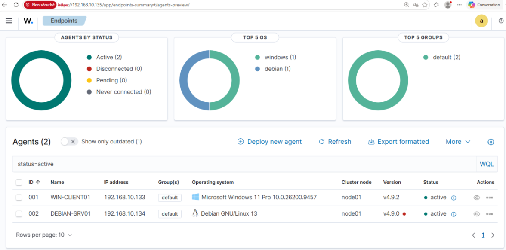
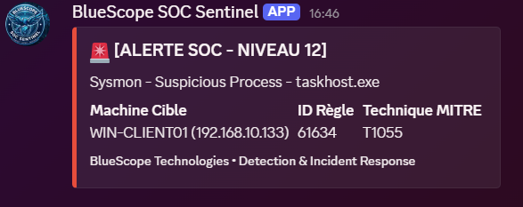

Déploiement d'un Mini-SOC Wazuh
1. Architecture & Télémétrie Avancée
Le projet repose sur un cluster Wazuh (Manager, Indexer, Dashboard) déployé sur Ubuntu Server, chargé de superviser des endpoints Windows 11 et Debian 13.
La Télémétrie Windows (Sysmon)
Les journaux Windows classiques manquant de granularité, nous avons déployé Sysmon avec la configuration recommandée par l'industrie (SwiftOnSecurity). Cela permet au SIEM d'ingérer des logs bas-niveau cruciaux, notamment la création de processus avec arguments (Event ID 1) et l'accès à la mémoire LSASS (Event ID 10).

Validation de l'enrôlement des agents Windows et Debian sur le Dashboard Wazuh.2. Ingénierie de Détection (Detection Engineering)
Simulation d'Attaque (Atomic Red Team)
Pour tester l'efficacité du SOC, nous avons utilisé le framework Atomic Red Team afin d'émuler des comportements adverses concrets, alignés sur le standard MITRE ATT&CK.
Création de Règle Sur-Mesure
Suite à la simulation d'une attaque de persistance (T1547.001 - Registry Run Keys), nous avons rédigé une règle de détection personnalisée en XML, exploitant le moteur d'expressions régulières PCRE2 pour déclencher une alerte critique :
3. Défense Active & Threat Intelligence
Automatisation de la Réponse (SOAR-lite)
Pour sortir d'une posture purement passive, nous avons configuré le module Active Response de Wazuh. Lors d'une tentative de brute-force SSH sur le serveur Debian, le SIEM ordonne dynamiquement l'ajout de l'IP attaquante dans la table de filtrage iptables (Action DROP) pour une durée de 60 secondes.
Intégration CTI & Alerting
- VirusTotal : Corrélation en temps réel des hashs de fichiers suspects (via File Integrity Monitoring) avec l'API publique de VirusTotal.
- Chaîne d'Astreinte (Discord) : Développement d'un script d'intégration en Python qui parse les alertes critiques (JSON) générées par Wazuh, et les transmet en temps réel via un Webhook sur un canal Discord d'astreinte.

Notification Rich Embed envoyée dynamiquement par le script Python sur le canal de réponse à incident.4. Bilan
Ce projet grandeur nature m'a permis de comprendre les rouages complexes du métier d'analyste SOC et d'ingénieur détection. Il a également mis en lumière des limites techniques réelles (SPOF lié à l'instance unique, quotas d'API), ouvrant la voie à de futures améliorations comme la mise en place d'un cluster en haute disponibilité.